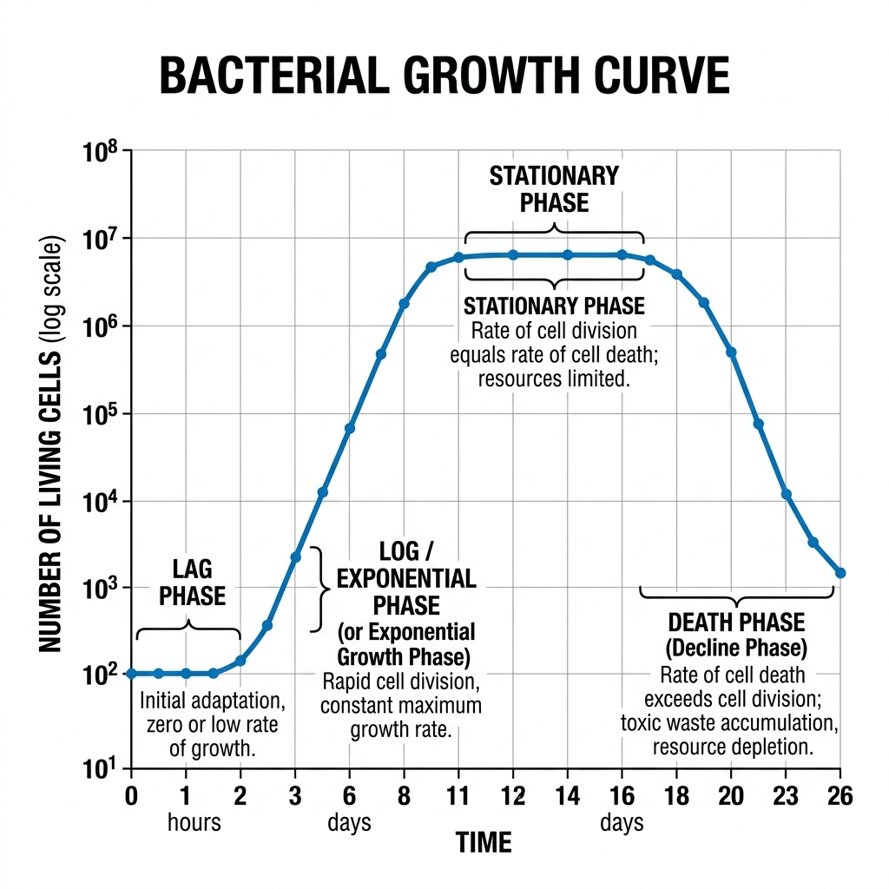

Biology - 2025
Complete Detailed Solutions · Previous Year Paper
Group A — Very Short Answer Type
1. (I) Discontinuous synthesis of DNA occurs in ______during replication of DNA.
Lagging strand (forming Okazaki fragments).
1. (II) ________amino acids can be produced by the body even if we do not get it from the food we eat.
Non-essential amino acids.
1. (III) Krebs cycle occurs in which part of the cell?
In the Mitochondrial matrix.
1. (IV) Which microorganisms are used to produce alcohol?
Yeast (specifically, Saccharomyces cerevisiae).
1. (V) The phenotypic ratio of dihybrid experiment is _________.
9 : 3 : 3 : 1
1. (VI) __________ is also known as “suicidal bag”.
Lysosome.
1. (VII) The genotypes of blood group O is __________.
ii (or I⁰I⁰).
1. (VIII) The general molecular formula of Carbohydrates is _________________.
Cₙ(H₂O)ₙ (or C_n(H_2O)_n).
1. (IX) In ___________ inhibition, the inhibitor competes with the substrate for binding to the active site of an enzyme.
Competitive inhibition.
1. (X) The excision of introns and the formation of final mRNA molecule by joining the exons is called _____
Splicing (or RNA splicing).
1. (XI) The chromosomes with satellite are known as ______.
SAT chromosomes (Satellite chromosomes).
1. (XII) Glycolysis is also known as _____
EMP pathway (Embden-Meyerhof-Parnas pathway).
Group B — Short Answer Type
2. What are different types of culture media based on the physical state? Distinguish between agar and broth?
Based on their physical state, culture media are classified into three types:
- Solid Medium: Contains a solidifying agent (like 1.5% - 2.0% agar). Used to observe colony morphology and isolate pure cultures.
- Semi-solid Medium: Contains a reduced amount of agar (0.5% or less). It is jelly-like, used to test bacterial motility and microaerophilic growth.
- Liquid Medium (Broth): Contains no solidifying agents. Used to grow large quantities of microbes rapidly.
Distinction between Agar (Solid) and Broth (Liquid):
| Feature | Agar (Solid Medium) | Broth (Liquid Medium) |
|---|---|---|
| Composition | Contains Agar powder (extracted from seaweed) as a solidifier. | Lacks Agar; it is purely a liquid solution of nutrients. |
| Growth Appearance | Bacteria grow as distinct, visible colonies on the surface. | Bacteria grow uniformly, turning the clear liquid turbid (cloudy). |
| Primary Use | Isolating pure cultures and identifying species morphology. | Growing a massive number of bacteria quickly for biochemical assays. |
3. Draw a comparison between eye and camera.
Both the human eye and a camera are optical instruments designed to capture light and form an image. Their functions map closely to one another:
| Function | Human Eye | Camera |
|---|---|---|
| Light Entry | Cornea: The clear front surface that acts as the initial protective window. | Lens Cover/Front Glass: Protects the internal camera lens. |
| Controlling Light Amount | Iris & Pupil: The iris expands/contracts to change the pupil size, regulating light hitting the retina. | Diaphragm & Aperture: The diaphragm adjusts the aperture size to control light hitting the sensor. |
| Focusing | Crystalline Lens: Changes shape (accommodation) via ciliary muscles to focus objects. | Glass Lens System: Moves physically back and forth to focus on objects. |
| Image Capture (Sensor) | Retina: Light-sensitive tissue containing rods and cones that captures the inverted image. | Photographic Film / Digital Sensor: Captures the inverted image. |
| Preventing Internal Reflection | Choroid: Black pigmented layer inside the eye absorbing scattered light. | Black interior paint: Absorbs scattered light inside the camera body. |
4. Draw labeled diagram of Animal cell as seen in Electron microscope. Comment on characteristics of Animal cell.
Characteristics of an Animal Cell:
- Eukaryotic: It possesses a true, membrane-bound nucleus housing linear DNA.
- No Cell Wall: Unlike plant cells, animal cells lack a rigid cell wall, giving them a flexible, irregular, or spherical shape. They are enclosed only by a selectively permeable plasma membrane.
- No Chloroplasts: They cannot perform photosynthesis and are heterotrophic.
- Small/No Vacuoles: If present, vacuoles are small and numerous, used for temporary storage or transport, unlike the large central vacuole of a plant cell.
- Presence of Centrosomes/Centrioles: Unique to animal cells, these structures organize microtubules and are vital during cell division (mitosis/meiosis).
- Lysosomes: Abundant in animal cells, acting as the digestive system of the cell by containing hydrolytic enzymes.
Labeled Diagram Representation:

5. Write short note on Central dogma.
The Central Dogma of Molecular Biology:
Proposed by Francis Crick in 1958, the Central Dogma describes the fundamental flow of genetic information within a biological system. It states that genetic information flows in one direction: from DNA to RNA, and from RNA to Protein.
It consists of three major processes:
- Replication: DNA makes an exact copy of itself to pass genetic information to the next cell generation. (DNA → DNA)
- Transcription: The information in a specific segment of DNA (a gene) is copied into a mobile messenger molecule called mRNA. (DNA → RNA)
- Translation: The ribosome reads the sequence of the mRNA and translates it into a specific sequence of amino acids to build a functional protein. (RNA → Protein)
Flow: DNA ──(Transcription)──> mRNA ──(Translation)──> Protein
Note: Retroviruses (like HIV) possess Reverse Transcriptase, allowing an exception where RNA is converted back to DNA, but the general rule holds for cellular life.
6. Explain the types of lipids depending on the esterification.
Lipids are a diverse group of organic compounds insoluble in water. Based on their chemical composition and esterification (what alcohol the fatty acids are esterified with), they are classified into three main types:
- Simple Lipids:
These are esters of fatty acids with various alcohols. They contain no other chemical groups.
- Fats and Oils (Triglycerides): Esters of fatty acids with glycerol. Fats are solid at room temperature (saturated), while oils are liquid (unsaturated). Used for energy storage.
- Waxes: Esters of fatty acids with high-molecular-weight monohydric alcohols. Used for waterproofing (e.g., beeswax, cutin on leaves).
- Compound (Complex) Lipids:
These are esters of fatty acids with an alcohol, but they also contain additional prosthetic groups (like phosphates, carbohydrates, or proteins).
- Phospholipids: Contain a phosphate group. They form the structural basis of all cell membranes (lipid bilayer).
- Glycolipids: Contain a carbohydrate (sugar) group. Important for cell recognition on the cell surface.
- Lipoproteins: Lipids bound to proteins, essential for transporting fats through the bloodstream (e.g., HDL, LDL).
- Derived Lipids:
These are substances derived from the hydrolysis (breakdown) of simple and compound lipids that still possess lipid-like characteristics. Examples include fatty acids, glycerol, and sterols (like cholesterol and steroid hormones).
Group C — Long Answer Type
7. (a) Explains the phases of microbial growth kinetics with graph. (b) Differentiate between sterilization and pasteurization.
(a) Microbial Growth Kinetics:
When a bacterial population is inoculated into a fresh, closed batch culture medium, its growth follows a characteristic curve consisting of four distinct phases:
- Lag Phase: The bacteria are adapting to their new environment. There is intense metabolic activity (synthesizing enzymes, RNA) but no actual cell division or increase in population size. The curve is flat.
- Log (Exponential) Phase: The bacteria are fully adapted and divide at their maximum rate via binary fission. The population doubles at a constant rate, leading to an exponential, steep upward curve. This is when they are healthiest and most susceptible to antibiotics.
- Stationary Phase: Essential nutrients are depleted, space becomes limited, and toxic waste products (like acids) accumulate. The rate of cell division equals the rate of cell death. The population size plateaus, and the curve flattens out at its peak.
- Death (Decline) Phase: The toxic environment and severe lack of nutrients cause the death rate to exceed the division rate. The population drops exponentially.
Bacterial Growth Curve Diagram:

(b) Difference between Sterilization and Pasteurization:
| Feature | Sterilization | Pasteurization |
|---|---|---|
| Definition | The complete destruction or removal of ALL forms of microbial life, including highly resistant bacterial endospores. | A mild heat treatment designed to kill specific pathogenic (disease-causing) microbes and reduce spoilage organisms. It does NOT kill spores. |
| Intensity | Extreme conditions (e.g., Autoclaving at 121°C at 15 psi for 15-20 mins, strong chemicals, or high radiation). | Mild heat (e.g., 72°C for 15 seconds in HTST, or 63°C for 30 mins). |
| Application | Surgical instruments, microbiological culture media, IV fluids. | Food and beverages (milk, fruit juices, wine, beer) to extend shelf life without ruining the taste or nutritional value. |
8. Explain why engineers need to study biology?
Modern engineering is no longer limited to steel, concrete, and silicon. Biology is becoming an engineering discipline in itself. Engineers need to study biology for several critical reasons:
- Biomedical Engineering and Healthcare: To design pacemakers, artificial organs, prosthetics, MRI machines, and targeted drug delivery systems, engineers must understand human physiology, cellular mechanisms, and biomechanics. You cannot design a stent without understanding blood flow and tissue rejection.
- Bioinformatics and Data Science: Biological data (like the human genome) is massive. Computer scientists and software engineers use biology to design algorithms for genome sequencing, predicting protein folding (like AlphaFold), and analyzing epidemiological data to model disease outbreaks.
- Biomimicry (Bio-inspired Design): Nature has spent billions of years optimizing designs through evolution. Engineers study biology to mimic these designs. Examples include Velcro (inspired by plant burrs), bullet train noses (inspired by the kingfisher's beak to reduce sonic booms), and aerodynamic aircraft surfaces (inspired by shark skin).
- Environmental and Civil Engineering: Civil engineers must understand ecology and microbiology to design effective wastewater treatment plants (which rely on bacteria to digest waste), manage solid waste (biomethanation), and perform bioremediation (using microbes to clean oil spills).
- Biochemical and Chemical Engineering: Industrial production of antibiotics, vaccines, biofuels, and enzymes requires bioreactors. Engineers must understand microbial growth kinetics and fermentation to scale up these processes from a petri dish to a 10,000-liter industrial tank.
- Bioelectronics and Neural Engineering: Bridging the gap between the brain and computers (like Neuralink) requires a deep understanding of neurobiology to interface silicon chips safely with living nerve tissue.
In short, the fusion of biology and engineering (Biotechnology) is driving the next industrial revolution, solving humanity's greatest challenges in health, food, and energy.
9. (a) What is DNA replication? (b) State in brief the mechanism of DNA replication with diagram.
(a) DNA Replication:
DNA replication is the biological process by which a cell makes an identical, exact copy of its entire DNA genome before it undergoes cell division. It is a "semi-conservative" process, meaning the new double helix contains one original (parental) strand and one newly synthesized strand.
(b) Mechanism of DNA Replication:
The process occurs during the S-phase of the cell cycle and involves a highly coordinated team of enzymes:
- Unwinding (Initiation): The enzyme Helicase unwinds the double helix by breaking the hydrogen bonds between the base pairs, creating a Y-shaped "Replication Fork". Single-Strand Binding Proteins (SSBPs) attach to the strands to keep them from snapping back together. Topoisomerase relieves the twisting tension ahead of the fork.
- Primer Synthesis: DNA Polymerase cannot start a new strand from scratch; it needs a starting point. The enzyme Primase synthesizes a short piece of RNA (an RNA primer) to act as a starting block.
- Elongation: DNA Polymerase III binds to the primer and begins adding complementary DNA nucleotides (A to T, C to G).
- Leading Strand: Because DNA Polymerase only works in the 5' to 3' direction, one strand (the leading strand) is synthesized continuously toward the replication fork.
- Lagging Strand: The other strand runs in the opposite direction. It must be synthesized discontinuously in short segments called Okazaki fragments, moving away from the fork.
- Termination and Joining: DNA Polymerase I removes the RNA primers and replaces them with DNA nucleotides. Finally, the enzyme DNA Ligase acts like glue, sealing the gaps between the Okazaki fragments to form a continuous, solid strand.
Diagrammatic Representation:

10. (a) Write a short note on secondary structure of protein. (b) Define essential, conditionally essential and non-essential amino acids giving one example from each. (c) Define Monosaccharide, Disaccharide and Trisaccharide with example. Distinguish between cis fat and trans fat.
(a) Secondary Structure of Protein:
The secondary structure refers to the localized folding of the polypeptide chain into highly regular, repeating geometric shapes. This folding is stabilized entirely by hydrogen bonds that form between the carbonyl oxygen (C=O) of one amino acid and the amino hydrogen (N-H) of another along the peptide backbone. The two most common secondary structures are:
- Alpha-Helix (α-helix): A coiled, spring-like structure where hydrogen bonds form vertically between every fourth amino acid. (Example: Keratin in hair).
- Beta-Pleated Sheet (β-sheet): Strands of the polypeptide chain lie side-by-side (parallel or anti-parallel) and are linked laterally by hydrogen bonds, forming a zigzag, sheet-like structure. (Example: Fibroin in silk).
(b) Classification of Amino Acids:
- Essential Amino Acids: Cannot be synthesized by the human body and must be obtained entirely from the diet. (Example: Leucine).
- Non-Essential Amino Acids: Can be synthesized by the human body in sufficient quantities, so they are not strictly required in the diet. (Example: Alanine).
- Conditionally Essential Amino Acids: Usually non-essential, but their synthesis is limited under special pathophysiological conditions (like severe illness, stress, or premature infancy), requiring dietary intake. (Example: Arginine).
(c) Carbohydrates & Fats:
- Monosaccharide: The simplest form of sugar, consisting of a single sugar unit that cannot be hydrolyzed further. (Example: Glucose, Fructose).
- Disaccharide: Formed by two monosaccharide units joined by a glycosidic bond. (Example: Sucrose = Glucose + Fructose).
- Trisaccharide: An oligosaccharide composed of three monosaccharide units joined together. (Example: Raffinose = Galactose + Glucose + Fructose).
Cis Fat vs. Trans Fat:
| Feature | Cis Fat | Trans Fat |
|---|---|---|
| Structure | Hydrogen atoms are on the same side of the carbon double bond, creating a "kink" or bend in the carbon chain. | Hydrogen atoms are on opposite sides of the double bond, keeping the carbon chain straight. |
| Physical State | Liquid at room temperature (because the kinks prevent tight packing). | Solid at room temperature (straight chains pack tightly). |
| Health Impact | Generally healthy (e.g., olive oil). Increases "good" HDL cholesterol. | Highly unhealthy. Created artificially via partial hydrogenation. Increases "bad" LDL and causes heart disease. |
11. (a) What is cell cycle? (b) Describe the different phases of cell cycle. (c) What is Crossing Over?
(a) Cell Cycle:
The cell cycle is the ordered, sequential series of events that a cell passes through from the time it is created until it divides into two new daughter cells. It involves cell growth, DNA replication, and cell division.
(b) Phases of the Cell Cycle:
The cell cycle is divided into two main phases: Interphase (preparation) and M-Phase (division).
1. Interphase: The longest phase, taking up ~90% of the cycle. It is divided into three sub-phases:
- G1 Phase (Gap 1): The cell grows rapidly in size, produces RNA, and synthesizes proteins and organelles necessary for DNA replication.
- S Phase (Synthesis): DNA replication occurs. The cell's genetic material is duplicated entirely, so each chromosome now consists of two sister chromatids.
- G2 Phase (Gap 2): The cell continues to grow and synthesizes specific proteins (like tubulin for the mitotic spindle) in final preparation for cell division.
- (Note: G0 Phase is a resting phase where cells exit the cycle and stop dividing, like adult neurons).
2. M-Phase (Mitotic Phase): The actual division of the cell.
- Mitosis (Karyokinesis): The nucleus divides. It consists of Prophase, Metaphase, Anaphase, and Telophase, where the duplicated chromosomes are equally separated to opposite poles.
- Cytokinesis: The physical division of the cytoplasm and cell membrane, officially separating the cell into two distinct daughter cells.
(c) Crossing Over:
Crossing over is a highly critical genetic process that occurs exclusively during Prophase I of Meiosis. When homologous chromosomes (one from the mother, one from the father) pair up to form a tetrad, non-sister chromatids physically overlap at points called chiasmata. They break and exchange equivalent segments of DNA. This recombination mixes paternal and maternal genes, resulting in entirely new genetic combinations in the gametes. It is the primary biological mechanism responsible for creating genetic variation in a population, ensuring that no two siblings (except identical twins) are exactly alike.